LoopRec：把序列推荐的计算深度分配到每个历史物品
中国人民大学高瓴人工智能学院的 Zhanshuo Cao、Jiakai Tang 等提出 LoopRec，研究同一用户历史里不同物品是否应该接受不同深度的序列编码。论文 Think Harder Where It Matters: Item-Level Adaptive Recursion for Sequential Recommendation 于 2026 年 10 月 21 日首次提交，本文依据 v1 全文及附录整理，核验日期为北京时间 2026 年 10 月 23 日。官方代码仓库 已核验可访问，本文未运行代码或复现实验。这里的“思考”对应隐藏状态反复更新，不意味着生成自然语言推理链。
现有序列推荐器通常不考虑历史物品对最终预测的贡献差异，而为每个物品分配固定计算预算。大量物品经过浅层处理就已稳定，少数关键物品却仍依赖更深更新；统一深度可能同时浪费已成熟物品的计算，并限制整个序列的推荐质量。
1. 背景和问题
1.1 从更强编码器转向计算分配
序列推荐的基本任务，是根据用户按时间排列的交互历史预测下一件感兴趣的物品。历史物品首先转成包含位置的信息表示，再通过自注意力、因果卷积或线性递归单元交互，最后用输出表示给候选物品排序。不同架构对“如何交换上下文”有不同答案，却往往默认所有有效位置通过相同数量的编码层。只要网络配置成六层，一个重复购买的常见标签和一个罕见的新类别点击都会得到六次更新。论文质疑的正是这一处结构默认，而不是候选生成、排序损失或数据预处理流程。
这种默认的便利很直接：同批张量形状规则，所有位置处于一致网络深度，计算图便于训练与部署。但用户历史并不是同质序列。频繁出现的商品可能在训练中已经获得稳定表示，一个稀少、探索性或与当前意图高度相关的行为则需要更充分地吸收上下文。相同的层数并不等价于相同的有效信息处理需求。如果增加网络层数只是让大量位置反复加工已经稳定的状态，那么全序列加深既消耗预算，也可能改变原本有用的信号组合。作者希望把层深从全局配置的一部分，变成每个位置随上下文学习出的属性。
这一问题也连接到大模型领域的共享递归与自适应深度：参数容量、执行次数和位置级计算分配是三个不同的量。重复使用同一块可以增加迭代次数而不等比例增加参数，逐位置停止可以改变实际执行量，而模型是否更准仍必须单独检验。LoopRec 把这套思路放到推荐历史，保留下一物品监督，加入根据当前状态逐轮决定是否退出的路由器。它没有把推荐任务改成文本生成，也没有利用大模型知识；其交叉价值在于把 token 级计算分配问题转成历史物品级计算分配问题。
1.2 两个诊断：表示何时稳定，灵活分配是否有空间
首先，作者在 Office 数据上训练三层 SASRec，然后做逐位置反事实截断。每次只选择一个历史位置，在某一层后冻结该位置，其他位置继续正常前向，比较最终 Top-30 集合是否和完整模型完全一致。这不是测隐藏向量距离，也不是要求目标物品排名完全不变。诊断量定义为能保持最终推荐集合的最早冻结层：
符号解释：$i$ 是被截断的历史位置；$L$ 是已训练模型的总层数，此处为三；$\ell$ 是允许停止更新的位置深度；$\mathcal R_{\mathrm{full}}$ 是正常完整前向的 Top-30 物品集合；$\mathcal R_{\mathrm{trunc}}^{(i,\ell)}$ 是只冻结位置 $i$ 后得到的集合；$\ell_i^{\star}$ 为该模型与该诊断口径下的饱和深度。
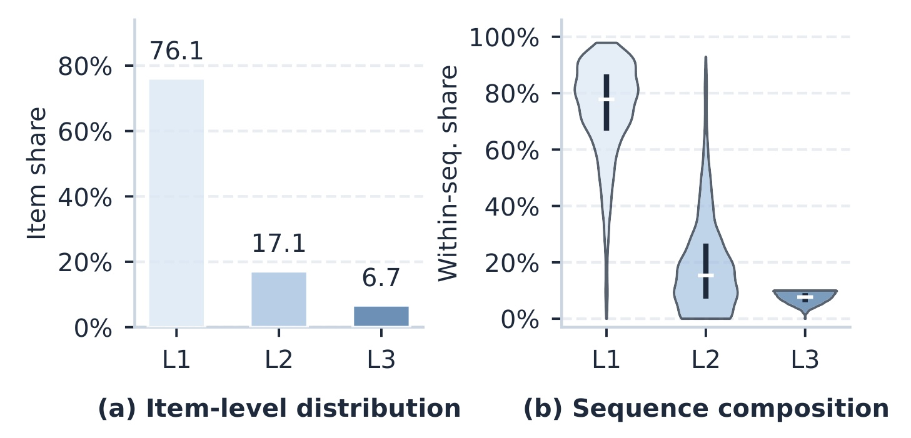
Figure 1 左侧把所有测试历史位置合起来看：76.14% 在第一层后冻结就不改变最终集合，累计 93.28% 在第二层以内达到这一条件，仍有 6.72% 需要三层。右侧的小提琴图则把统计单位换成每条序列内部的比例，说明浅饱和与深饱和位置经常同时出现。两侧共同支持“需求在同一序列内部异质”，比仅报告全测试集大多数物品容易更有说服力；否则完全可能只是在区分容易用户和困难用户。这里也需要保留测量边界：饱和是相对于已经训练好的三层参考模型、Top-30 精确集合和单位置冻结干预而言。它不直接告诉训练中的路由器哪一层最好，也不能保证多位置同时冻结仍保持相同集合。集合相同还可能掩盖集合内部排名变化，因此这是一种深度敏感性统计，而非推荐质量完备指标。
第二个诊断让问题更接近排序质量：固定模型参数，只允许最近五个历史位置分别从一、二、三层中选停止深度，之前的位置仍完整计算。候选包含原来的全深度分配，并限制尾部总层计算不超过基线。枚举空间虽然小，选择器却能查看真实下一物品，直接挑出使目标排名最好的候选。它检验的是“已有参数下是否存在更好的位置计算分配”，并未提供一个推理时可用的选择算法。原文所说 95.4% 序列中非均匀分配把目标排得更高，必须和这一目标可见条件一起理解。
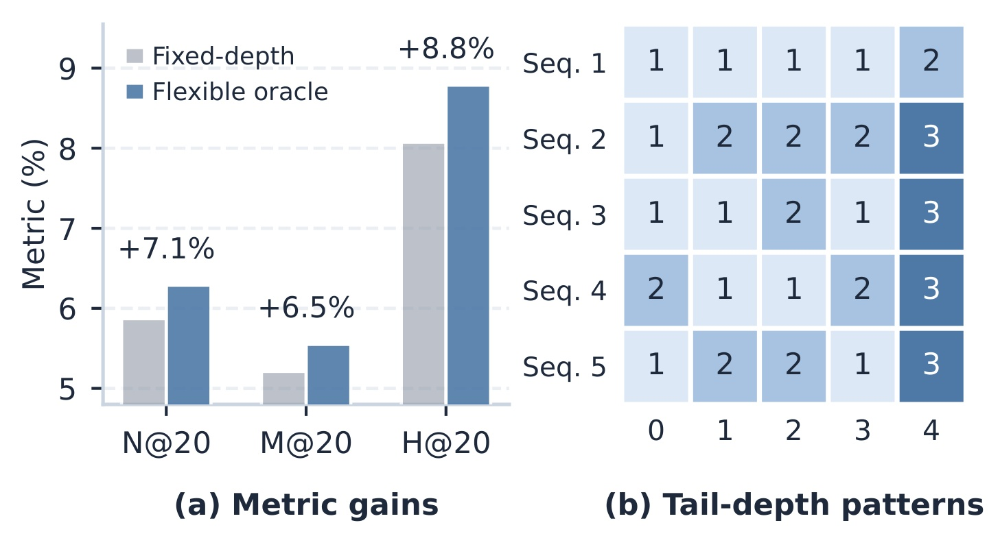
Figure 2 左侧分别给出 oracle 相对固定深度的 NDCG@20、MRR@20、HR@20 增益，为 7.1%、6.5%、8.8%；右侧列出五条样例的最近五位置深度。它呈现的不是“所有近期位置都加深”，而是不同位置有不同保留层数。配套 Table 1 中，第一条目标排名从 24 到 13，只用了固定尾部预算的 40%；第二条从 7 到 4，对应 66.7%。这解释了作者为什么认为固定计算既可能浪费预算，也可能损伤质量：保留某些状态、不再反复更新，也可能改善最终组合。不过这里的改进全部属于事后 oracle，它通过真实目标选择分配，生产推理拿不到这一信息。把 8.8% 写成 LoopRec 模型的线上收益，或者把 95.4% 解释为学习路由正确率，都会改变实验含义。另一个局限是只干预最近五项，不能据此估算任意长历史的全局最优深度分配。
诊断之后真正需要解决两件事。原来的固定分配仅在百分之四点六的测试序列中被这个受限选择器偏好，这个比例表达局部替代空间，并不衡量模型是否学会某种真实推理能力。不同位置从不同轮数退出，输出仍要能在共同特征空间里用于下一物品排序；同时，是否需要继续只能在吸收当前轮上下文后判断，一开始就给每个位置固定深度容易过早决策。LoopRec 因而同时采用共享计算块与逐轮边界门。前者降低不同深度使用完全不同参数所带来的表示对齐压力，后者把一次性决定改为渐进退出。需要谨慎的是，共享参数给出一致的变换结构，并不构成跨深度分布完全一致的数学保证。后文实验检验的是这套设计组合的效果，而非证明任意深度表示天然可交换。
2. 方法
2.1 初始上下文编码与共享递归
模型输入仍是按时间排序的物品序列。物品嵌入加位置嵌入，经原骨干的输入变换得到每个位置的 token，堆叠成带 padding 的输入矩阵。共享骨干块可以包含多层，作者以 LxRy 表示每轮使用多少层、最多执行多少轮，例如 L2R3 是共享两层块最多递归三次，最大有效深度六层。参数共享不等于只计算一次：同一参数作用于不同轮次状态，实际有效深度取决于该位置最终执行的轮数。第一次通过完整历史是所有有效位置共有的步骤，为路由提供已经包含上下文的状态。
符号解释：$v_t$ 是第 $t$ 个历史物品；$\mathbf e_{v_t}$ 与 $\mathbf p_t$ 分别为物品和位置嵌入；$\phi$ 为输入变换；$\mathbf x_t$ 为该位置输入；$\mathbf X$ 堆叠整个输入历史；$\mathcal B$ 为跨轮共享骨干块；$\mathbf H^{(1)}$ 为第一轮完整上下文编码结果。
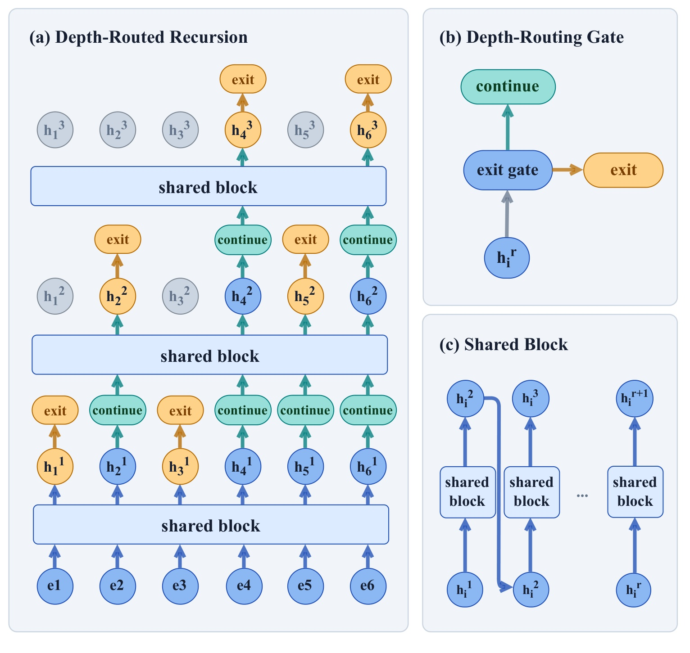
Figure 3 的左图从六个输入物品出发，先统一通过共享块，再在每轮边界各自退出或继续。第一轮两个位置退出，第二轮又退出两个位置，剩下位置继续更新；灰色节点表示这些位置保留已有状态，而不是消失后被另一个独立深层网络补算。右上图强调门的输入是当前隐藏状态，右下图强调各轮复用同一共享块。因而核心结构同时改变了两个轴：通过权重共享控制参数增长，通过逐位置退出控制执行量。这两者不能混为“模型变小所以更快”，也不能把图里的连线理解成退出位置仍参加每一轮深层计算。原文与附录算法都明确，后续共享块只处理仍活动的子序列，子序列保持原始时间顺序，并继续遵守因果掩码。退出状态最终还会用于读出，但不会在后续轮更新。第一轮已经把完整历史上下文传播进各状态，因此较深轮次在更小活动集合上继续加工仍有历史信息来源；与此同时，这一操作确实改变深轮能直接访问的状态集合，与“所有位置每轮都作为键值、只掩掉部分输出”的实现不同。复现时若照后者写，计算和语义都会与文中算法偏离。
共享递归在四类骨干上的包裹方式也要具体看待。SASRec 使用其风格的 Transformer 块，BSARec 在本身具有频域归纳偏置的块上做递归；NextItNet 在原生残差卷积块上递归，原生编码固定六个残差块及一、二、四的膨胀循环；LRURec 则在自己的线性递归块上应用。作者验证的是保留不同骨干接口时能否采用相同计算分配思想，不是宣称四种网络内部操作完全相同。尤其活动子序列抽取后，相邻活动物品可能在原历史中并不相邻，卷积感受野与递归传递的实际含义会受到影响，需要结合代码进一步核实。
2.2 逐边界停止与深度读出
第 $r$ 个边界的路由器读取当前状态，并加上可学习的轮次嵌入，让同一隐藏状态在不同预算阶段可以获得不同停止倾向。它输出一个标量，经 sigmoid 转成继续倾向，退出概率为其补数。前向采取明确阈值：退出概率大于等于一半就停止，否则进入下一轮。活动集合因此单调缩小，不会让已经退出的位置重新进入。到了最大轮数，所有剩余位置强制停止。
符号解释：$i$ 为历史位置；$r$ 为已完成轮次；$\mathbf h_i^{(r)}$ 是当前隐藏状态；$g$ 是轻量路由头；$\boldsymbol\rho_r$ 是轮次嵌入；$\sigma$ 为逻辑 sigmoid；$s_i^{(r)}$ 是继续方向的路由分数；$q_{i,\mathrm{exit}}^{(r)}$ 为退出概率；$\mathcal A^{(r)}$ 是到本轮仍活动的位置集合。
符号解释：$R$ 为最大递归轮数；下标 $\mathcal A^{(r+1)}$ 表示按原顺序抽取继续位置的状态；$\mathcal B$ 为同一共享块；$\mathbf H^{(r+1)}$ 是该子序列下一轮输出；集合包含关系表示退出不可逆。padding 不属于有效路由位置，不能参与使用率统计。
硬阈值选择深度，不能直接把离散深度索引当作可微变量。作者因此让推荐损失通过一个软路由质量控制读出权重，而不需要额外深度标签。假设位置最终在第 $d_i$ 轮退出，沿已评估路径累计没有退出的质量；非最终轮退出时，读出权重等于到达该处的质量乘该处退出概率，预算末轮强制退出则直接使用残余质量。输出再加回原始输入 token，保留一条不受深度读出缩放影响的残差路径。
符号解释：$c_i^{(r)}$ 为沿已实现路径到达边界 $r$ 的继续质量；$d_i$ 为硬选择轮次；$q$ 为前述退出概率；$\omega_i$ 是只赋给最终选中状态的软读出权重；$\mathbf h_i^{(d_i)}$ 为退出时状态；$\bar{\mathbf z}_i$ 为最终表示；$\mathbf x_i$ 保留原输入信息。
这里不是把各层状态按退出概率做全层加权平均。每个位置只读出选中深度的状态，软质量提供的是固定硬路径条件下到已评估门概率的梯度通路。未走过的深度没有被虚构成可观测状态，硬选择本身也没有因此变成普通连续运算。这个区别决定了学习信号和推理计算的对应方式：推荐损失可以鼓励某条已实现路径的读出更合适，却仍需要训练稳定措施避免门过早锁死。由于深度使用与读出缩放同时改变，主表效果也不宜全部归因于“重要物品获得更多层”一个因素。
2.3 深度均衡、门稳定与训练预热
路由面临两种退化：所有位置挤到同一深度，或者状态尚未稳定时门就过度自信。第一项用负载均衡正则处理。作者沿实际访问路径给位置分配软深度质量，到硬退出深度时将所有剩余质量归到该深度，之后深度为零。这与读出权重不同：均衡质量在硬退出点吸收残余质量，读出权重在非末轮退出点还乘退出概率。前者服务深度使用分布，后者服务最终推荐表示，两者相等并非一般事实。
符号解释：$\alpha_{i,r}$ 是位置 $i$ 分配到深度 $r$ 的均衡质量；$c_i^{(r)}$ 是到达质量；$d_i$ 是硬退出深度；$q$ 是退出概率。对硬退出位置，残余质量完整计入均衡统计，所以沿其实际路径的质量总和为一。
符号解释：$\mathcal I$ 为有效位置集合；$N$ 为集合大小；$P_r$ 是批次平均软使用质量；$f_r$ 是硬选择该深度的有效位置占比；$\mathbb I$ 为指示函数；$\mathcal L_{\mathrm{bal}}$ 通过软硬使用的乘积抑制集中使用少数深度。它不是按每个物品平均分配等量计算的约束，也不要求每条序列具有完全相同的深度直方图。
门稳定项采用二元门的 z-loss，以 softplus 路由分数的平方约束其对数配分量，避免门太早进入极端状态。它继承稀疏路由训练的稳定化思路；但该函数对正负分数不是对称平方惩罚，不能简单解释成“把所有退出概率拉到一半”。预热阶段则暂时绕过路由，所有有效位置完整执行最大轮数，读出权重设为一，关闭路由专用正则。等共享状态学出基本推荐能力后，才开放退出门和完整目标。文中把预热 epoch 数作为超参数，由验证集 NDCG@20 选择。
符号解释：$\mathcal R_+$ 为尚有活动位置且 $r<R$ 的有效边界集合；$\mathcal A^{(r)}$ 是该边界的活动位置；$s_i^{(r)}$ 是门分数；$\operatorname{softplus}(s)=\log(1+\exp(s))$；$\mathcal L_z$ 先在每轮有效位置内平均，再在有效边界之间平均。
符号解释：$\mathcal D$ 为前缀与下一物品训练对；$\mathbf s_{1:t}$ 为当前历史；$v_{t+1}$ 为真实目标；$p$ 为候选分布；$\mathcal L_{\mathrm{rec}}$ 是唯一物品预测监督；$\lambda_{\mathrm{bal}}$ 和 $\lambda_z$ 分别控制均衡与门稳定正则；$\mathcal L$ 为预热结束后使用的总损失。
训练用 Adam，最多一百个 epoch，验证指标十个 epoch 不改善即早停，主表取最优验证检查点并平均五个种子。完整模型的 z-loss 系数统一为千分之一，均衡系数、预热长度和递归配置按不同骨干在指定搜索空间选择。由此可见，“不需深度标签”并不意味着无需配置搜索：最大轮数仍预先固定，路由阈值也固定为一半；自动化的是给定结构与预算内部的位置退出决定，而不是连最大模型预算一起学习。
3. 实验结果
3.1 数据与全排序口径
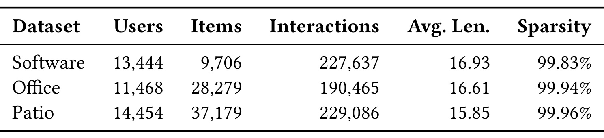
Table 2 显示三个数据集的用户规模都在一万多，但物品数从 Software 的 9706 增加到 Patio 的 37179，交互量则都只有二十万左右。因此 Patio 更稀疏，表中稀疏度达到 99.96%，平均序列长度也最短，为 15.85。Office 有 11468 个用户、28279 个物品和 190465 次交互，是前述诊断和大多数路由分析的主要环境。作者按时间排序，只保留至少十次交互的用户，采用留一法划分验证与测试，并把模型输入最大长度设成五十。评估时还裁去不曾出现在训练中的历史物品，属于 warm-start 条件。本文的“稀有物品更多计算”主要指训练中出现少的已知物品，不是零样本新物品冷启动。三个子类来自同一数据源，减少了来源协议差异，却不能覆盖短视频、广告、跨域或百万级长历史。表中高稀疏度也不等于用户历史完全没有信号，因为用户最低交互门槛已经排除了一批最冷用户。
作者使用全物品排序的 MRR@10、MRR@20、NDCG@10、NDCG@20，不是采样少量负例后的排名。所有主表值是五个随机种子的测试均值，星号表示相对同骨干固定深度模型的配对 t 检验达到百分之五显著性门槛。实验支持的单位是同一协议内的相对改进，不能和其他预处理、其他候选空间中的绝对指标直接拼表。原文没有线上曝光、业务收入或跨设备部署测量，以下效果全部属于作者报告的离线测试。
3.2 主结果：普遍正向与最大值的边界
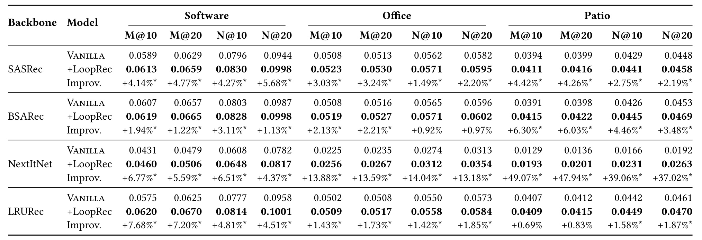
Table 3 共包含四骨干乘三数据集乘四指标的四十八项配对比较，全部为正向提升，其中四十四项有显著性星号。最直接的关注点是 SASRec：NDCG@20 在 Software 从 0.0944 到 0.0998，表中相对增益 5.68%；Office 从 0.0582 到 0.0595，增益 2.20%；Patio 从 0.0448 到 0.0458，增益 2.19%。这些数字说明，在已经有较强注意力基线时，收益更接近若干百分点，而非几十个百分点。BSARec 叠加频域偏置后仍受益，三个数据集 NDCG@20 增益为 1.13%、0.97%、3.48%，但 Office 的两个 NDCG 比较没有显著性标记，不能把“四十八项正向”写成“四十八项显著”。
跨骨干看，LRURec 的 NDCG@20 提升范围为 1.85% 到 4.51%，说明方法并不只依赖自注意力。NextItNet 的最大相对提升很突出：Patio MRR@10 为 49.07%，NDCG@20 为 37.02%。不过其 Patio 原始 NDCG@20 只有 0.0192，加 LoopRec 后为 0.0263，仍低于表中其他三类骨干。最大值来自弱基线与特定稀疏子类，不能当成典型推荐模型收益。正文列出稀疏度越高平均提升越大的观察，也可能受这组极端相对数影响；没有更广泛控制实验时，不能认定稀疏性是收益变化的唯一原因。另一个需要留意的点是，表格的均值显示四位小数，作者增益可能由更高精度均值计算，所以不应仅用显示值重算后据微小差异判论文算错。主表强项是多骨干方向一致，薄弱处是同源数据和较窄业务规模；它尚不足以证明工业精排中相同收益与延迟可以同时获得。剩余两项没有星号的比较是线性递归骨干在庭院数据上的两个倒数排名指标，虽仍为正向均值，波动与差异大小却不足以通过文中检验。这里应同时关注绝对分值、相对增益和统计显著性；三者描述不同信息，任何单一最大百分比都不能代表全表。
3.3 路由解释：近期、稀有与饱和深度
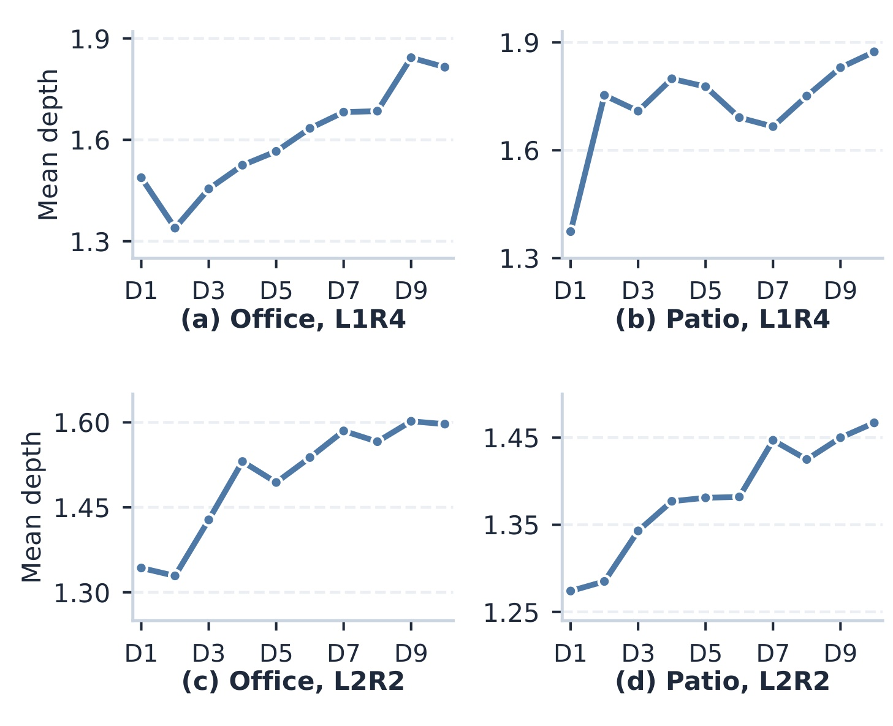
Figure 4 把每条有效历史等分为十个相对位置区间，从最早到最近，分别汇总平均选择轮数。四幅图覆盖 Office、Patio 以及 L1R4、L2R2 两种配置，整体上越近的交互获得更深路由，但局部点并非处处单调。例如 Patio 的 L1R4 在较前位置就出现明显上升，中间还有回落。这种展示比只给全局均值更有用，因为它说明门确实在序列内部重分配，而不是给每条历史选一个固定轮数。纵轴是“轮数”而非统一层数，L2R2 每轮包含两层，所以不能把其 1.5 轮和 L1R4 的 1.8 轮直接当作前者计算更少的证据。位置关系也只是统计关联，不能推出给所有近期物品硬分更深一定最好。用户兴趣迁移、短期意图和数据切分都可能使尾部更重要；本文没有通过改变时间间隔或保持语义一致的干预来分离这些因素。相对十分位也会把长度不同的历史压到同一横轴，因而图中平均数并不等于某个固定绝对位置的路由深度。更长历史是否继续沿用相同趋势，仍需要额外测试。
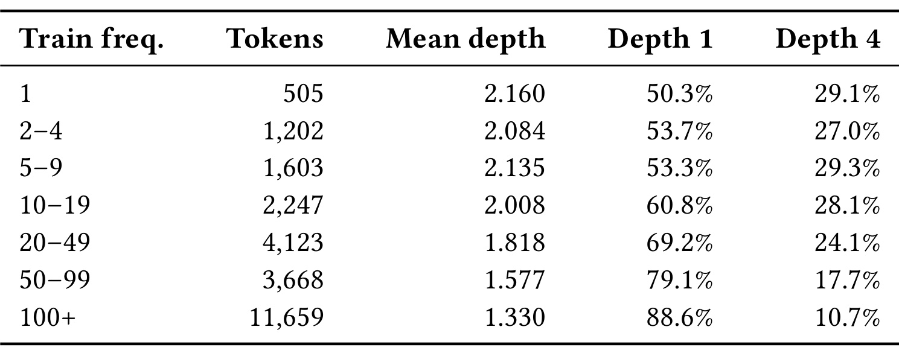
Table 4 从训练交互次数观察稀有性。只出现一次的物品桶中共有 505 个测试历史 token，平均深度为 2.160，50.3% 在第一层退出，29.1% 达到深度四；训练频率超过一百的桶有 11659 个 token，平均深度降到 1.330，第一层比例升到 88.6%，深度四比例降到 10.7%。差异支持路由把更多计算分给训练信号较少的物品，但频率五到九桶平均深度 2.135 高于二到四桶的 2.084，因此关系并不严格单调。桶的 token 数差异也很大，平均深度下降不是对每个物品都成立的规则。进一步的附录 Table 7 给出一条历史：高频标签可以很早退出，但鼠标垫等位置会达到深度四，较晚出现的纸张也可能保持浅层，说明语义和周围上下文仍会改变选择。这样的案例只能解释可能的行为，不能替代总体因果分析。这里的数量是测试历史出现的物品实例，而非去重物品数；一个频繁出现的物品可以贡献多个实例。若要研究物品类别本身的需求，还应增加按去重物品等权统计，避免高频物品在总体曲线上占据过大权重。
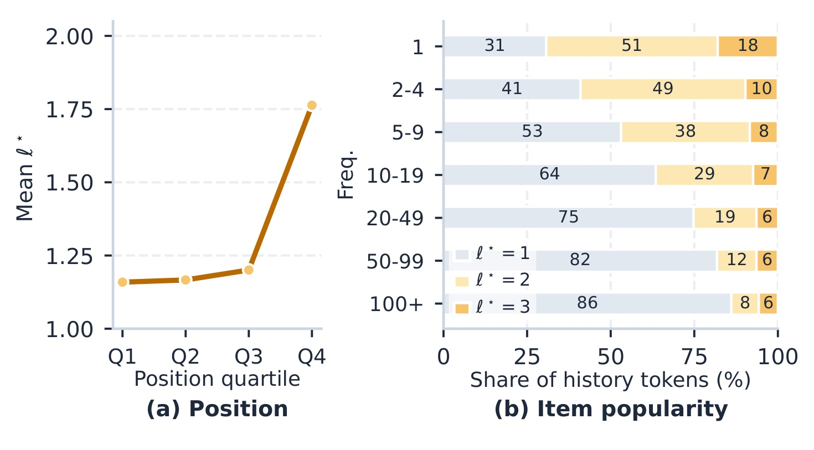
Figure 5 回到独立的固定深度参考模型，而不是继续统计 LoopRec 自己。左图中前三个位置四分位的平均饱和深度约为 1.16、1.17、1.20，最后四分位升到 1.76，深度三比例主要集中在最后四分位。右图中只出现一次的物品平均饱和深度为 1.873，深度三份额约 18.0%；超过一百次的桶平均为 1.197，深度三份额约 5.7%，深度一份额约 86.1%。这给路由解释增加一层独立参照：近期与稀有不仅在学习路由中更深，在另一个固定模型的冻结敏感性诊断中也更晚稳定。不过这仍是分组统计方向一致，论文没有给出每个 token 的预测路由与 oracle 最佳深度一致率，也没有证明每个深层分配确实提高相应目标排名。因此“需求对齐”适合作为证据支持的解释，不能升级为已恢复真实最优计算策略。附录 Figure 6 表明多种配置确实使用多个深度，Figure 7 的类别聚合也呈现类似频率关系，作为辅助一致性证据即可。两种分析使用同一个数据子类，也不能据此视为跨领域复验。
3.4 区分共享递归、逐项路由与训练稳定
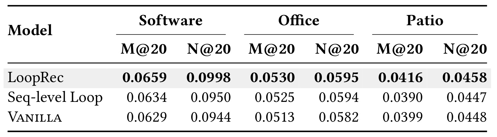
Table 5 控制了一个重要混淆：递归复用参数本身就可能改善模型，所以只比较原生骨干和 LoopRec 无法知道逐物品路由贡献多少。Seq-level Loop 使用同样的共享块反复处理全序列，不加逐位置停止门，并在相同递归配置集合中按验证 NDCG@20 选择。Software 上全序列递归把 NDCG@20 从 0.0944 提到 0.0950，完整模型进一步到 0.0998；Office 上从 0.0582 到 0.0594，再到 0.0595，后一步很小；Patio 上全序列递归略低于原始基线，完整模型则达到 0.0458。由此可以说参数共享解释了一部分收益，逐项配置还有额外贡献，但不能说每个数据集的大部分提升都来自路由。尤其 Office 的主要收益在共享循环就已出现，完整模型与序列循环的绝对 NDCG 差仅万分之一，缺少这组配对显著性时应避免强归因。该实验也没有匹配所有变体的平均计算预算，搜索同一配置空间只保证选择流程接近，并非严格相同算力对照。对工程复现，最有价值的是保留这个简单序列级递归基线，否则很容易把共享参数的正则效应一并记给路由器。还应观察不同种子选择的递归配置是否一致，以及验证最优点的计算量是否相近。若完整模型挑选了更大上限而序列递归挑选更浅上限，二者测试差异需要结合配置再解释；这并不推翻现有正向均值，却限制了可作出的纯机制因果判断。另一个值得保留的差异是庭院数据中序列级循环的倒数排名指标从基线下降，而逐项路由能恢复并超出基线，这说明重复执行本身不是必然有效，如何选择性保留状态需要与共享递归共同检验。
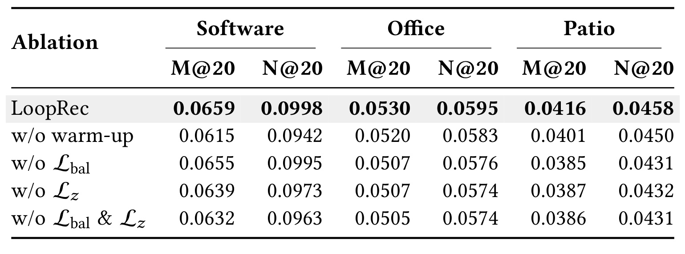
Table 6 进一步检验训练组件。去掉预热，Software 的 NDCG@20 从 0.0998 降到 0.0942，Office 从 0.0595 降到 0.0583，Patio 从 0.0458 降到 0.0450；作者报告三数据集平均 MRR@20 和 NDCG@20 分别下降 4.03% 和 3.11%。这与“先让共享状态学会推荐，再让门决定退出”的训练逻辑一致。去掉均衡损失时 Office 和 Patio 的 NDCG@20 变成 0.0576 和 0.0431，去掉 z-loss 时是 0.0574 和 0.0432，显示路由正则对这两个子类更加敏感；Software 去掉均衡只降到 0.0995，影响小得多。因此不应把每项正则都描述为对所有数据集同等重要。
同时去掉两项正则，三数据集平均 MRR@20 下降 5.36%，NDCG@20 下降 4.25%。这些结果证明该训练配方中的组件对最终排序有用，却没有单独报告每次消融的门饱和率、深度熵或早退错误，因此“为何下降”仍主要由目标设计与最终指标共同解释。需要复现时记录软使用、硬深度分布、路由分数和种子差异，才能进一步判断是深度坍缩、门过早变硬，还是读出缩放改变了优化。表中有些消融组合不是简单可加，例如两个正则一起去掉并不在所有列都比任意单独去掉更差，说明优化交互存在，不能把平均下降机械相加估计完整收益。原文给出了五种子均值，但这张消融表未展示标准差和所有成对检验，也是解释较小差异时需要保留的界限。另一个实际含义是，完整方案包括一段全深度训练期，最终早退节约并不自动等价于整个训练过程同比省时；训练成本还要累计预热期和路由期，再与基线的收敛速度比较。预热也会推迟稀疏路径出现的时刻，调参时应同时记录何时打开门，不能只把最终退出比例写成整个训练过程的平均执行量。
3.5 启发式能解释多少，计算节约兑现多少
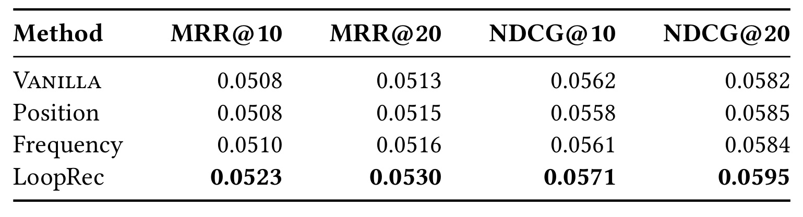
Table 8 是附录中值得单独保留的验证。如果学到的规律只是“越新越深”或“越稀有越深”，简单规则也许已经够用。Position 把有效历史位置归一化，越近的项给越多轮数；Frequency 从训练频次取对数并归一化反转，越少见的项越深；两者保留共享递归骨干与完整预热，用单位读出权重，不加路由专用正则。Office 上两种启发式 NDCG@20 分别为 0.0585 和 0.0584，高于原始模型 0.0582，但完整 LoopRec 为 0.0595，作者报告相对两规则分别高 1.64% 和 1.88%。四个指标的完整模型均值都最高，说明只靠单一可解释信号不能重现全部效果。
这个比较的限定也很关键：作者明确没有匹配平均计算，启发式与完整模型还在读出和正则方面不同，因此它不是严格证明“学习门在等算力下优于规则”的实验。更合理的结论是，在各自所报告配方中，可学习上下文路由更好，而位置与频率能提供部分有用分配信号。Frequency 的计数只来自训练划分，且不因重叠前缀重复累计，这避免了在构造训练例时把频率人为放大。Position 单物品序列把分数设为最大，padding 则完全不参与路由。读这些细节的价值在于，规则基线本身也需定义完整，才能区分方法收益和预处理差异。要进一步检验必要性，应把规则读出、正则、平均轮数和参数搜索同时控制，本文还没有完成这组最严格的归因。如果在相同预算下规则与学习门十分接近，工程实现可以有不同取舍；若差距仍然稳定，就更能支持隐藏状态包含了位置和频率之外的计算需求信号。后一个判断目前属于后续实验设计，不能假写成本文已证明的结论。
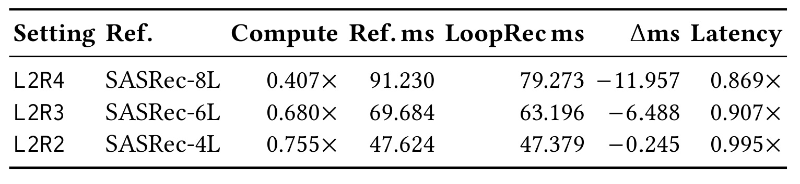
Table 9 把抽象计算和实测时间放到同一张表，纠正了“少计算就同比加速”的常见误读。L2R4 对照八层 SASRec，选中计算预算为 0.407 倍，但编码器中位耗时从 91.230 毫秒降到 79.273 毫秒，时间比为 0.869，约减少 13.1%；L2R3 的预算为 0.680 倍，延迟为 0.907 倍；L2R2 的预算为 0.755 倍，延迟却是 0.995 倍，几乎没有实际变化。计算比的倒数约 2.46 只能表示该预算计数下的减少倍数，不是端到端服务吞吐提升，也不是编码器获得 2.46 倍加速。动态子序列抽取、路由判断、GPU 张量形状和小算子开销会使逻辑计算量与墙钟不成比例，论文结果直接展示了这种落差。
这些测量仅覆盖 Office、三个配置和一张 NVIDIA A6000，且只测顺序编码器，不含全候选打分。推荐系统的完整延迟还可能由嵌入读取、候选数、打分矩阵和请求调度主导，因此不能把编码器的 13.1% 直接平移到整体服务。表中三配置以同最大有效深度的固定模型为参照，也不代表表三每个主结果点同时满足相同加速比；效果实验与延迟实验需要通过配置映射再关联。作者把稀疏感知 kernel 作为未来方向，说明当前框架首先证明分配可学与逻辑预算可省，硬件兑现还存在空间。对一个更浅骨干的服务，L2R2 这组几乎不变的耗时尤其重要：若真实目标只是降低在线时延，先实现并测量最小动态执行原型，比仅根据计算计数立项更有依据。实测还应进一步报告吞吐、显存和尾延迟，检查不规则活动集合会不会使请求间波动增加；原表没有这些服务指标，不能把单一中位时间扩展成全部系统性能结论。编码器节约与最终质量还应在同一配置点上绘制权衡曲线。
4. 总结
4.1 我会保留的技术判断
LoopRec 的核心贡献是把推荐模型中的“给每个历史位置多少计算”变成可学习决策，并通过统一的共享递归结构、逐边界硬退出、软质量读出和稳定训练组合给出可操作方案。两个诊断让问题从直觉走向可测对象：同条历史里存在不同冻结敏感性，已训练模型也有非均匀分配改善排序的空间。随后四类骨干、三个数据集的四十八项正向比较，说明这种改造值得进一步复现。最有启发的不是最大相对增益，而是简单骨干不用替换物品监督就能研究计算分配，并且能把位置、训练频率与深度联系起来分析。
我倾向于把这篇论文放在“推荐序列的自适应执行”方向，而不是一般的大模型推理能力或工业加速已成熟方案。共享块的多轮更新给不同位置相同参数空间内的不同加工次数，路由器在当前上下文形成后再决定继续，确实对应摘要提出的两个难点。另一方面，诊断中的 Top-30 稳定、目标可见 oracle、实际模型的离线 NDCG 与编码器时间，是四种不同证据。坚持把它们分开，才能准确判断方法在解决什么，以及什么还没有解决。本文的工程启发是把选择性更新与真实执行路径同时写进基准，而不是在密集计算后给部分位置乘零来宣称省算。
4.2 局限与后续跟进
第一，外推范围有限。三个同源 Amazon 子类、最长五十的 warm-start 历史，距离广告高频行为、跨域长序列、多任务精排和冷启动仍有明显差异。第二，最醒目的 oracle 数字依赖真实目标，属于诊断上界性质的证据，不能作为路由训练标签免费使用，也不能证明部署门已经找到了最优深度。第三，归因尚不完全：共享递归、读出权重、正则与不同配置搜索共同改变结果，启发式比较没有匹配平均计算；Office 上序列循环已解释大量收益。第四，系统收益有条件，当前最小延迟几乎不变，编码器之外的服务成本没有纳入。第五，深度与频率、位置的联系是相关性分析，未排除这些因素的共同影响，也没有逐位置因果正确率或路由稳定性证明。
后续我会先复现 SASRec 的固定深度、全序列共享递归、完整 LoopRec 三者，在同数据预处理、参数搜索和平均计算下比较，保留五种子及深度直方图。然后核对活动子序列的因果 mask、退出状态保存、非末轮与强制退出的读出差异，尤其避免把均衡质量误当读出权重。再做一个包含候选打分的延迟实验，按历史长度、batch、设备和深度配置报告中位数与高分位，而不只报告选中层计数。最后检验路由是否在用户行为或流量频率变化后失稳，并和位置规则、频率规则在等预算下比较。这些是根据本文证据提出的复现计划，尚不是作者已经报告的结果。
更长期的问题是最大轮数仍需人为设定，深层活动集合变稀后如何高效批处理也未解决。若未来能把可变预算学习、稳定路由与稀疏执行内核一起完成，才有机会让“把计算花在关键历史上”的离线观察转成可靠的服务收益。当前最稳妥的结论是：逐物品自适应递归在所测离线序列推荐环境中可行，通常带来温和但一致的强基线提升，且逻辑计算节约只部分兑现为实测编码器加速。